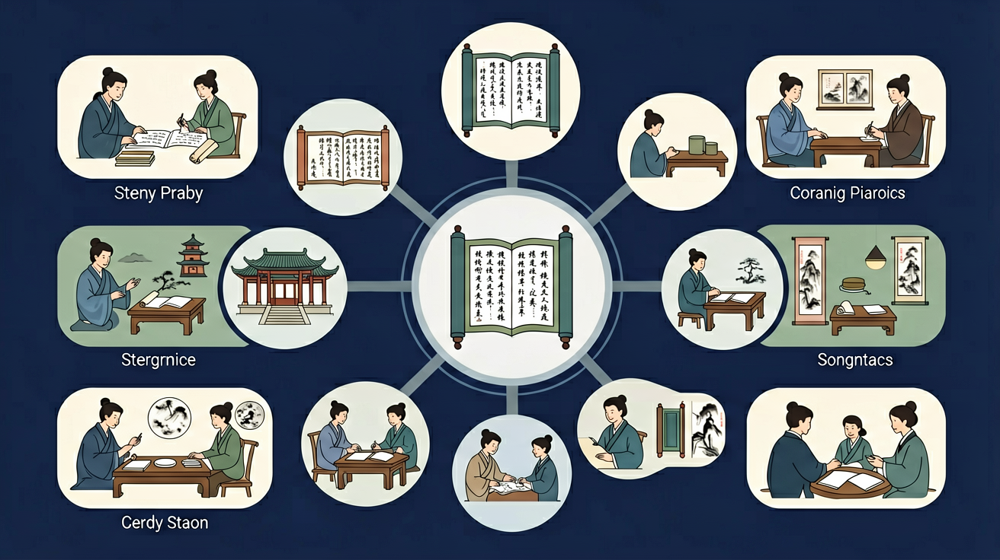

鉴赏文学作品。感受和体验文学作品的语言、形象和情感之美，能欣赏、鉴别和评价不同时代、不同风格的作品。

❓ 为什么诗人总爱写月亮？它到底有啥特别的？
❓ '枯藤老树昏鸦'为啥能让我感觉特别凄凉？
❓ 考试时怎么区分'以景结情'和'寓情于景'？
学完这一课，这些问题你都能自信地回答。
🎯 能说出常见意象的象征意义（如柳=离别）
🎯 能判断诗歌意境的类型（如雄浑/凄清）
🎯 能分析意象组合对意境营造的作用
'羌笛何须怨杨柳'中'杨柳'的象征意义是？
判断意境类型：'千山鸟飞绝，万径人踪灭'
古诗词意象与意境是高中语文的重要内容。鉴赏文学作品。感受和体验文学作品的语言、形象和情感之美，能欣赏、鉴别和评价不同时代、不同风格的作品。
审美鉴赏与创造是指学生在语文学习中，通过审美体验、评价等活动形成正确的审美意识、健康向上的审美情趣与鉴赏品位。
意象是融入主观情意的物象，意境是意象组合形成的艺术境界。抓意象要明其常见文化内涵，又要据诗境灵活理解。由意象到意境，再到情感，是鉴赏基本路径。
And：学生知道月亮代表思乡
But：但不懂同一意象在不同诗中有不同情感
Therefore：本模块教你们破解意象密码
意象是诗人情感的密码本！比如柳树在《诗经》里是'昔我往矣，杨柳依依'的离别愁，到了贺知章笔下却变成'碧玉妆成一树高'的生机勃勃。关键看三点：1.上下文搭配（如配雨雪还是春风）2.诗人经历（王维战乱后写的柳特别苍凉）3.时代背景（盛唐的柳比晚唐的柳明媚）。就像密码本第28页和第153页都是'柳'字，但破译出的意思完全不同。
🌍 就像你们用不同滤镜拍同一朵云：早上用金色滤镜拍是希望，暴雨前用灰滤镜拍成压抑。诗人也在用文字'滤镜'处理意象。
杜牧《赠别》'蜡烛有心还惜别'中的蜡烛意象表达什么？
意象=物象+情感，意境=意象群+氛围
杨柳岸晓风残月：三个意象叠加强化离愁
同是菊花，陶渊明vs李清照意境迥异
用思维导图呈现'大漠孤烟直'的视觉层次
为校园樱花设计'落花'意象的两种情感表达
复制提示词到 AI 学伴，生成「古诗词意象与意境」的思维导图或赏析提纲；也可以上传你手绘的示意图，请 AI 学伴点评。
复制后可粘贴到 AI 学伴继续对话。
把关键意象列出，描述画面色彩动静，再归纳诗人情感或理趣。
常见误区：常见误区是只背意象词典，不顾具体诗句语境。
意象与意境的关系理解正确的是？
关于古诗词意象特征，正确的是？
And：学生能识别单个意象
But：但不懂多个意象如何调配出意境
Therefore：本模块带你们做意境调配实验
意境是意象的化学实验！以马致远《天净沙》为例：1.用9个名词意象当原料（枯藤18%、老树22%、昏鸦15%...）2.加入'夕阳西下'的温度控制3.最后用'断肠人'点睛。关键比例：景物意象占70%营造画面感，情感词限30%避免说教。就像做奶茶，茶底7分甜度3分才不腻。王安石'春风又绿江南岸'的'绿'字就是那3%的催化剂。
🌍 你们玩过的食物合成小游戏：两个面包夹牛排变汉堡，面包夹辣条就黑暗料理了。诗人也在玩文字合成。
王维'大漠孤烟直'的意境主要靠哪组配方？
对比古典与现代诗中的'月亮'意象运用
先独立作答，再点选项查看对错与错因。
下列诗句中，哪一项的意象最能体现'思乡'之情？
杜甫《春望》中'感时花溅泪，恨别鸟惊心'主要运用了哪种手法？
马致远《天净沙·秋思》中'枯藤老树昏鸦'的意象组合效果是？
柳永《雨霖铃》中'杨柳岸，____风'通过典型意象渲染离愁
答案：晓
'晓风'强化清晨送别的凄清意境
李白诗句'____不见君，楚水清若空'中横线应填典型送别意象
答案：孤帆
'孤帆'象征远行与分离
（高考题）王维《鹿柴》'返景入深林'的意境特点是？
设计'夕阳教室'意象表达毕业情绪，最不恰当的是？
比较杜牧与李商隐夜雨意象，说法错误的是？
✅ 抓情感关键词（如'断肠人'）
💡 忽略'一切景语皆情语'
✅ 对比记忆：梧桐=离情，芭蕉=愁绪
💡 未建立意象-情感数据库
口诀：物象披情即意象，群象生境意悠长
类比：意象像奶茶配料，意境是最终口感
复述本课两个核心概念的定义。
用本课方法分析一个新例子。
有同学认为：把单纯景物描写当意境 —— 请说明错在哪里。
有同学认为：混淆相似意象（梧桐vs芭蕉） —— 请说明错在哪里。
把还没弄明白的地方写下来问 AI 学伴。它会先帮你找到卡住的地方，再给你一个小小的提示，让你自己往前走一步。